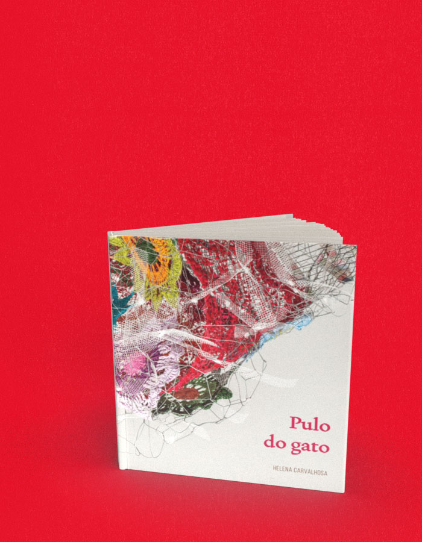

Pulo do Gato
A compra acontece no site da livraria, em uma nova aba. Consulte lá os preços e a disponibilidade. Procure pelo título ou ISBN deste livro.
- Autoria / créditos
- Helena Carvalhosa
- ISBN
- 9788578161958
- Páginas
- 60
- Formato
- 17,5 x 21 cm
- Acabamento
- brochura
Sobre o livro
Pulo do gato mostra trabalhos recentes trabalhos de Helena Carvalhosa, feitos com tecidos variados e armações ou telas de aço – e também, como diz o curador e crítico Marcelo Salles, feitos “de ar, movimento, luz, memória e do espaço em torno deles”. São esculturas em cores, frágeis, volumosas, algumas elegantes, que paradoxalmente nasceram depois de umas tantas esculturas densas, pesadas, terrenas, feitas de cerâmica e reunidas com telas de arame.
Helena Carvalhosa é artista plástica. Suas obras já foram mostradas em museus como a Pinacoteca do Estado e o Museu Afro, em espaços culturais como os do Sesc e da Aliança Francesa de São Paulo, e, fora do Brasil, em galerias como a Arauco, em Nuremberg (Alemanha).
Pulo do gato é seu terceiro livro. Os outros dois são Ócio , um livro com imagens do cotidiano que ela ressignifica e que são abastecidas por escritos de Manoel de Barros; e Fazenda Pinhal – Caderno de receitas e histórias de família , em que ela nos leva a uma viagem pela fazenda centenária fundada por seus tataravós em São Carlos, no interior de São Paulo, e pelas receitas que os amigos que visitavam a fazenda deixavam de presente num caderno. Os três livros fora publicados pela Terceiro Nome.
← Voltar ao catálogo